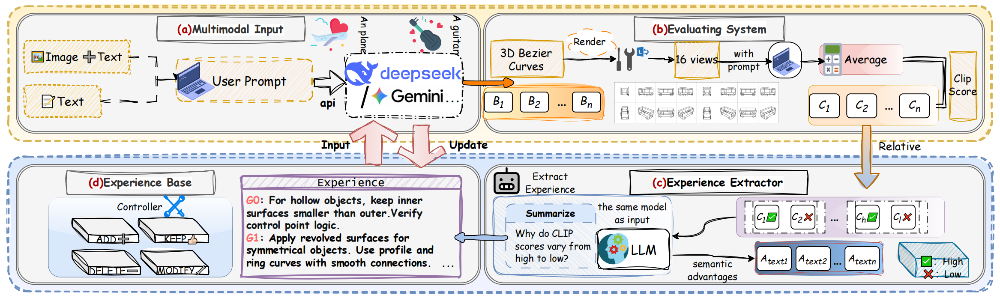
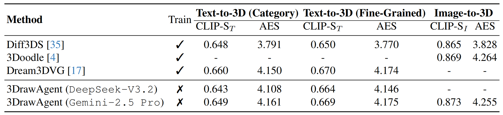

3DrawAgent: Teaching LLM to Draw in 3D with Early Contrastive Experience
1Beijing University of Posts and Telecommunications | 2Jiangnan University | 3HaoHan Data
Accepted by CVPR 2026 🎉 🎉 🎉
⭐ CVPR 2026 Highlight
Abstract
Sketching in 3D space enables expressive reasoning about shape, structure, and spatial relationships, yet generating 3D sketches through natural language remains a major challenge. In this work, we introduce 3DrawAgent, a training-free, language-driven framework for 3D sketch generation that leverages large language models (LLMs) to sequentially draw 3D Bezier curves under geometric feedback. Unlike prior 2D sketch agents, our method introduces a relative experience optimization strategy that adapts the recently proposed Group Reward Policy Optimization (GRPO) paradigm. Instead of relying on explicit ground-truth supervision, we construct pairwise comparisons among generated sketches, with each pair consisting of a relatively better and a worse result based on CLIP-based perceptual rewards and LLM-based fine-grained qualitative assessment. These experiences are then used to iteratively refine the prior knowledge of 3D drawing, enabling black-box reinforcement of the model's 3D awareness. This design allows our model to self-improve its spatial understanding and drawing quality without parameter updates. Experiments show that 3DrawAgent can generate complex and coherent 3D Bezier sketches from diverse textual prompts, exhibit emergent geometric reasoning, and generalize to novel shapes.
Method
3DrawAgent is a training-free, language-driven framework for 3D sketch generation built around three stages: (i) language-conditioned 3D curve generation via in-context prompting, (ii) contrastive experience learning through a GRPO-inspired accumulation process, and (iii) experience-guided 3D sketch generation for novel prompts.
- LLM as Spatial Planner. A frozen LLM (DeepSeek-V3 / Gemini-2.5 Pro) autoregressively generates sequences of 3D Bézier control points from text prompts via carefully designed in-context examples — no fine-tuning required.
- Contrastive Knowledge Extraction (CKE). Inspired by GRPO, we construct pairwise contrastive experiences from candidate sketches ranked by multi-view CLIP similarity. The LLM then acts as a semantic advantage judge, articulating why one sketch outperforms another to distill transferable 3D spatial principles.
- Supervision-free & Ground-truth-free. The entire pipeline relies solely on self-produced rollouts and CLIP-based perceptual rewards, requiring no 3D annotations, no gradient updates, and no predefined motion priors.
- Competitive Performance at Minimal Cost. Despite being training-free, 3DrawAgent matches or surpasses trained baselines on CLIP-S and aesthetic scores, while reducing generation time from 60–120 min (GPU) to ∼2 min at an average cost of $0.09 per sample.

Results



BibTeX
@inproceedings{xiao2026drawagent,
title = {3DrawAgent: Teaching LLM to Draw in 3D with Early Contrastive Experience},
shorttitle = {3DrawAgent},
author = {Xiao, Hongcan and Xiao, Xinyue and Wang, Yilin and Zhang, Yue and Qi, Yonggang},
booktitle = {Proceedings of the {IEEE}/{CVF} Conference on Computer Vision and Pattern Recognition ({CVPR})},
year = {2026}
}